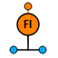
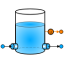
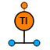

| Symbol | Name | Description |
|  | HydFlowMeter [+] | Mass flow meter |
| HydPipe [+] | Pipe | |
| HydPressureMeter [+] | Pressure meter | |
|  | HydTank [+] | Tank |
|  | HydTemperatureMeter [+] | Temperature meter |
| HydValve [+] | Valve |
Document generated automatically (Date: 2019:01:23, Time: 00:19:33)